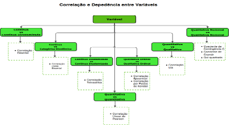

-
Time Series Forecast
Jurimetria, Data Science
(Made in Python, 2021)
-
Generalized and Mixed Models
Modeling, Statistics
(Made in R, 2021) -
Detectando Anomalias na Distribuição de Ações
Jurimetria, Statistics, Data Science
(Made in Python, 2021) -
Raspando Dados do Pescado, Ceasa,PE
Web Scraping, Data Science
(Made in Python, 2016) -
Repeated measures anova
Statistics, Modeling
(Made in R, 2021)
-

Machine Learning to Estimate Wood volume
Statistics, Modeling
(Made in R, 2020) -
 Workflow Correlation Analysis
Statistics, Qualitative, Quantitative
(Made in Fluxograma, 2021) -
Qual a probailidade de Jack sobreviver ao titanic?
Exploratory Analysis, Statistics
(Made in R and Python, 2016) -
Curso R para florestais
Statistics, Programming, Forestry
(Made in R, 2019)
Portfólio
A ciência de hoje é a tecnologia de amanhã!